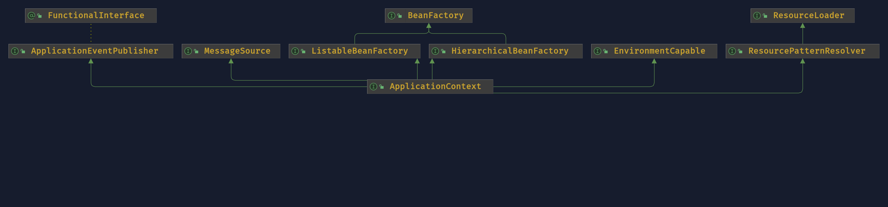
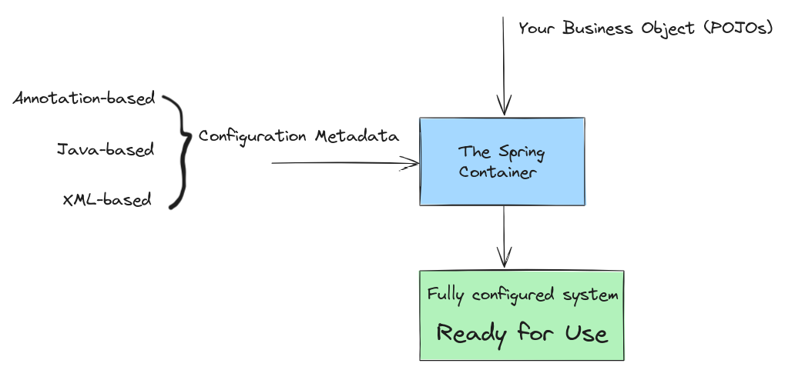
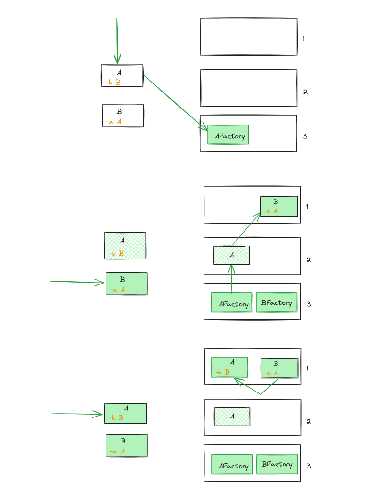
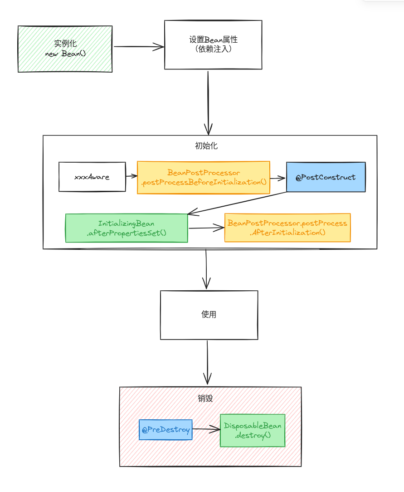

Spring IoC 容器¶
介绍¶
Spring 使用依赖注入（Dependency injection ）来实现控制反转（ Inversion of Control ）原则。 对象可以通过以下方式定义其依赖项：
构造方法的参数
工厂方法的参数
对象实例的属性
IoC 容器在创建 Bean 时，注入这些依赖项。通过类的原始构造方法或一些机制（如服务定位器模式）控制 bean 本身依赖的位置和实例化，这个过程从根本上来说是 bean 本身的逆过程（因此得名“控制反转”）
备注
参考 Inversion of Control vs Dependency Injection
控制反转是什么，反转了什么？
控制反转就是将顺序编写的代码转变为委托结构，反转的是程序控制流，不是由程序员控制程序的流程，而是由外部源（框架、服务、其他组件）控制程序的流程。
控制反转是框架与库不同的关键部分。库本质上是一组可以调用的函数或类，每个调用都会执行一些工作并将控制权返回给客户端。
依赖注入是什么，与控制反转有什么关系？
Dependency-Injection (DI) 是 IoC 更具体版本，依赖注入本质上就是提供对象所需的对象（其依赖项），而不是让它自己构造它们。
容器¶
org.springframework.beans 和 org.springframework.context 包是 Spring Framework 的 IoC 容器的基础。BeanFactory 提供了配置框架和基本功能， ApplicationContext 添加了更多企业特定的功能。

org.springframework.context.ApplicationContext 接口代表 Spring IoC 容器，负责实例化、配置和组装 bean。容器通过读取配置元数据来获取要实例化、配置和组装哪些对象的指令。配置元数据以 XML、Java 注释或 Java 代码表示。

小心
ApplicationContext 提供了 getBean 方法来获取 bean 实例，但是官网并不建议在应用程序代码调用 getBean() 方法，而是使用依赖注入来获取所依赖的 bean 实例。
Bean¶
由 Spring IoC 容器实例化、组装和管理的对象，就成为 Spring bean。在容器本身内，这些 bean 定义表示为 BeanDefinition 对象。bean 的定义本质上是创建一个或多个对象的配方，可以通过以下方式实例化 bean
构造方法
静态工厂方法
实例工程方法
依赖¶
DI 存在两种主要方式：
基于构造函数的依赖注入
基于 Setter 的依赖注入
循环依赖¶
若A、B相互依赖，则可以基于 Setter 进行依赖注入，Spring 会强制其中一个 Bean 在完全初始化之前注入另一个 Bean。
Spring容器解决单例作用域Bean的循环依赖主要是依靠其三级缓存机制，这里主要讨论的是字段注入或setter注入（构造器注入不支持循环依赖）。以下是Spring如何解决循环依赖的步骤：
一级缓存（Singleton Objects）： 这是一个包含所有已经初始化完成的单例Bean的缓存。当一个Bean被完全初始化后，它会被放入这个缓存中。
二级缓存（Early Singleton Objects）： 这个缓存存放的是提前暴露的Bean引用，也就是说，当一个Bean的实例被创建出来，但是还没有完全初始化（还没有进行属性注入等），Spring会将这个原始的Bean实例放入二级缓存中。
三级缓存（Singleton Factories）： 这个缓存存放的是
ObjectFactory，当一个Bean正在创建过程中，Spring会将一个创建Bean的工厂对象放入三级缓存中。
当发生循环依赖时，Spring的处理流程如下：

假设有两个Bean A和B，它们互相依赖。
当Spring尝试创建Bean A时，它发现A需要B，于是它暂停创建A，开始创建B。
在创建B的过程中，B又发现需要依赖A，此时Spring会尝试从缓存中获取A。
因为A已经开始创建了，所以它的工厂对象存在于三级缓存中。Spring会使用这个工厂对象来创建A的早期引用，并将这个引用放到二级缓存中。
接下来，B可以使用这个早期引用完成自己的创建并被放入一级缓存。
然后Spring回到A的创建过程，此时A可以从一级缓存中获取到已经创建好的B，完成自己的初始化，并放入一级缓存。
通过这种方式，Spring可以在不完全初始化Bean的情况下提前暴露一个Bean的引用，从而解决循环依赖的问题。需要注意的是，这种机制只适用于单例作用域的Bean，对于原型作用域的Bean，Spring不会尝试解决循环依赖，因为每次请求原型作用域的Bean时，都会创建一个新的实例。
自动注入¶
模式 |
解释 |
|---|---|
|
（默认）没有自动注入。Bean引用必须由 |
|
通过属性名称进行自动注入。Spring寻找一个与需要自动注入的属性同名的Bean。例如，如果一个Bean定义被设置为按名称自动注入，并且它包含一个 |
|
如果容器中正好有一个 property 类型的 bean 存在，就可以自动注入该属性。如果存在一个以上的bean，就会抛出一个致命的 exception，这表明你不能对该bean使用 |
|
类似于 |
小技巧
通过 byType 或 constructor 自动注入模式，可以将数组（array）和泛型集合（collection）注入。
// byType
List<LogicHandler> list;
// constructor
public class BeanConstructor {
public BeanConstructor(List<LogicHandler> handler) {
this.handler = handler;
}
}
Bean Scope¶
singleton
prototype
request
session
application
websocket
备注
spring 提供了 thread scope（SimpleThreadScope）, 但默认没有注册，如需要使用，可通过 ConfigurableBeanFactory接口上声明的void registerScope(String scopeName, Scope scope); 注册。需要自定义其他 scope ，先实现 Scope 接口，再registerScope 注册，就可以通过@Scope("customScope")使用了。
自定义 Bean 的生命周期¶

@PostConstruct和@PreDestroy注解。推荐使用。InitializingBean和DisposableBeancallback 接口。自定义
init()anddestroy()方法。
为同一个Bean配置的多个生命周期机制，具有不同的初始化方法，其调用方式如下。
注解了
@PostConstruct的方法。afterPropertiesSet()，如InitializingBean回调接口所定义。一个自定义配置的
init()方法。
销毁方法的调用顺序是一样的。
注解了
@PreDestroy的方法。destroy()，正如DisposableBean回调接口所定义的那样。一个自定义配置的
destroy()方法。
启动关闭回调¶
Lifecycle 接口定义（可以用来启动和停止一些后台进程）。
public interface Lifecycle {
void start();
void stop();
boolean isRunning();
}
如果启动和关闭调用的顺序可能很重要，可以考虑使用 SmartLifecycle，启动时，phase最低的对象先启动。当停止时，遵循相反的顺序。
public interface Phased {
int getPhase();
}
public interface SmartLifecycle extends Lifecycle, Phased {
boolean isAutoStartup();
void stop(Runnable callback);
}
Aware 接口¶
接口名称 |
注入的依赖性 |
解释 |
|---|---|---|
|
声明 |
|
|
封装了 |
|
|
用来加载Bean类的类加载器（Class loader）。 |
|
|
声明 |
|
|
声明Bean的名称。 |
|
|
定义了用于在加载时处理类定义的织入点。 |
|
|
配置解析消息的策略（支持参数化和国际化）。 |
|
|
Spring JMX notification publisher。 |
|
|
配置的加载器用于低级别的资源访问。 |
|
|
容器所运行的当前 |
容器扩展点¶
BeanPostProcessor 自定义 Bean¶
public class InstantiationTracingBeanPostProcessor implements BeanPostProcessor {
// simply return the instantiated bean as-is
public Object postProcessBeforeInitialization(Object bean, String beanName) {
return bean; // we could potentially return any object reference here...
}
public Object postProcessAfterInitialization(Object bean, String beanName) {
System.out.println("Bean '" + beanName + "' created : " + bean.toString());
return bean;
}
}
BeanFactoryPostProcessor 定制配置元数据¶
public interface BeanFactoryPostProcessor {
/**
* Modify the application context's internal bean factory after its standard
* initialization. All bean definitions will have been loaded, but no beans
* will have been instantiated yet. This allows for overriding or adding
* properties even to eager-initializing beans.
* @param beanFactory the bean factory used by the application context
* @throws org.springframework.beans.BeansException in case of errors
*/
void postProcessBeanFactory(ConfigurableListableBeanFactory beanFactory) throws BeansException;
}
FactoryBean 自定义实例化逻辑¶
FactoryBean<T> 接口提供三个方法。
T getObject(): 返回本工厂创建的对象的一个实例。该实例可能会被共享，这取决于该工厂是返回singleton还是prototype。boolean isSingleton(): 如果这个FactoryBean返回singleton，则返回true，否则返回false。这个方法的默认实现会返回true。Class<?> getObjectType(): 返回由getObject()方法返回的对象类型，如果事先不知道类型，则返回null。